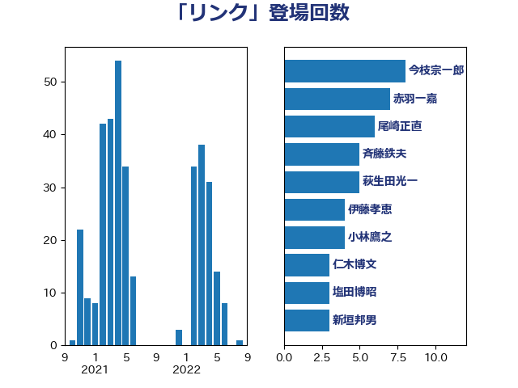

単語「リンク」

| 今枝宗一郎 | 自由民主党 | 8 回 |
| 赤羽一嘉 | 公明党 | 7 回 |
| 尾崎正直 | 自由民主党 | 6 回 |
| 斉藤鉄夫 | 公明党 | 5 回 |
| 萩生田光一 | 自由民主党 | 5 回 |
| 伊藤孝恵 | 国民民主党 | 4 回 |
| 小林鷹之 | 自由民主党 | 4 回 |
| 仁木博文 | 無所属 | 3 回 |
| 塩田博昭 | 公明党 | 3 回 |
| 新垣邦男 | 立憲民主党 | 3 回 |
| 日下正喜 | 公明党 | 3 回 |
| 本村伸子 | 日本共産党 | 3 回 |
| 河野太郎 | 自由民主党 | 3 回 |
| 片山大介 | 日本維新の会 | 3 回 |
| 西銘恒三郎 | 自由民主党 | 3 回 |
| 野田聖子 | 自由民主党 | 3 回 |
| 阿部弘樹 | 日本維新の会 | 3 回 |
| 中西健治 | 自由民主党 | 2 回 |
| 串田誠一 | 日本維新の会 | 2 回 |
| 北側一雄 | 公明党 | 2 回 |
| 吉田宣弘 | 公明党 | 2 回 |
| 吉良州司 | 無所属 | 2 回 |
| 安江伸夫 | 公明党 | 2 回 |
| 寺田学 | 立憲民主党 | 2 回 |
| 小西洋之 | 立憲民主党 | 2 回 |
| 山口壯 | 自由民主党 | 2 回 |
| 山岡達丸 | 立憲民主党 | 2 回 |
| 山岸一生 | 立憲民主党 | 2 回 |
| 山崎誠 | 立憲民主党 | 2 回 |
| 山添拓 | 日本共産党 | 2 回 |
| 山田太郎 | 自由民主党 | 2 回 |
| 岩渕友 | 日本共産党 | 2 回 |
| 岸信夫 | 自由民主党 | 2 回 |
| 平木大作 | 公明党 | 2 回 |
| 後藤茂之 | 自由民主党 | 2 回 |
| 有村治子 | 自由民主党 | 2 回 |
| 木原誠二 | 自由民主党 | 2 回 |
| 杉久武 | 公明党 | 2 回 |
| 杉本和巳 | 日本維新の会 | 2 回 |
| 柚木道義 | 立憲民主党 | 2 回 |
| 浜口誠 | 国民民主党 | 2 回 |
| 田村憲久 | 自由民主党 | 2 回 |
| 田村智子 | 日本共産党 | 2 回 |
| 矢倉克夫 | 公明党 | 2 回 |
| 秋野公造 | 公明党 | 2 回 |
| 竹内真二 | 公明党 | 2 回 |
| 舩後靖彦 | れいわ新選組 | 2 回 |
| 芳賀道也 | 国民民主党 | 2 回 |
| 茂木敏充 | 自由民主党 | 2 回 |
| 菅家一郎 | 自由民主党 | 2 回 |
| 菅義偉 | 自由民主党 | 2 回 |
| 鈴木宗男 | 日本維新の会 | 2 回 |
| 鈴木義弘 | 国民民主党 | 2 回 |
| 高木啓 | 自由民主党 | 2 回 |
| 高橋千鶴子 | 日本共産党 | 2 回 |
| 三木亨 | 自由民主党 | 1 回 |
| 上川陽子 | 自由民主党 | 1 回 |
| 中司宏 | 日本維新の会 | 1 回 |
| 中曽根康隆 | 自由民主党 | 1 回 |
| 中谷真一 | 自由民主党 | 1 回 |
| 丹羽秀樹 | 自由民主党 | 1 回 |
| 井上信治 | 自由民主党 | 1 回 |
| 伊佐進一 | 公明党 | 1 回 |
| 伊波洋一 | 無所属 | 1 回 |
| 伊藤渉 | 公明党 | 1 回 |
| 佐藤正久 | 自由民主党 | 1 回 |
| 佐藤茂樹 | 公明党 | 1 回 |
| 倉林明子 | 日本共産党 | 1 回 |
| 前原誠司 | 国民民主党 | 1 回 |
| 加藤勝信 | 自由民主党 | 1 回 |
| 勝目康 | 自由民主党 | 1 回 |
| 吉川赳 | 無所属 | 1 回 |
| 吉田とも代 | 日本維新の会 | 1 回 |
| 吉田統彦 | 立憲民主党 | 1 回 |
| 城井崇 | 立憲民主党 | 1 回 |
| 堀井学 | 自由民主党 | 1 回 |
| 堀場幸子 | 日本維新の会 | 1 回 |
| 大石あきこ | れいわ新選組 | 1 回 |
| 大西健介 | 立憲民主党 | 1 回 |
| 宮本徹 | 日本共産党 | 1 回 |
| 小宮山泰子 | 立憲民主党 | 1 回 |
| 小沼巧 | 立憲民主党 | 1 回 |
| 小泉進次郎 | 自由民主党 | 1 回 |
| 小野泰輔 | 日本維新の会 | 1 回 |
| 岩本剛人 | 自由民主党 | 1 回 |
| 岩田和親 | 自由民主党 | 1 回 |
| 岩谷良平 | 日本維新の会 | 1 回 |
| 岬麻紀 | 日本維新の会 | 1 回 |
| 岸真紀子 | 立憲民主党 | 1 回 |
| 早稲田ゆき | 立憲民主党 | 1 回 |
| 木村次郎 | 自由民主党 | 1 回 |
| 柳ヶ瀬裕文 | 日本維新の会 | 1 回 |
| 武井俊輔 | 自由民主党 | 1 回 |
| 津島淳 | 自由民主党 | 1 回 |
| 浅田均 | 日本維新の会 | 1 回 |
| 浅野哲 | 国民民主党 | 1 回 |
| 浦野靖人 | 日本維新の会 | 1 回 |
| 湯原俊二 | 立憲民主党 | 1 回 |
| 滝波宏文 | 自由民主党 | 1 回 |
| 熊谷裕人 | 立憲民主党 | 1 回 |
| 田村まみ | 国民民主党 | 1 回 |
| 石井苗子 | 日本維新の会 | 1 回 |
| 石原正敬 | 自由民主党 | 1 回 |
| 石川博崇 | 公明党 | 1 回 |
| 石川大我 | 立憲民主党 | 1 回 |
| 磯崎仁彦 | 自由民主党 | 1 回 |
| 福山哲郎 | 立憲民主党 | 1 回 |
| 福島みずほ | 社会民主党 | 1 回 |
| 篠原孝 | 立憲民主党 | 1 回 |
| 緑川貴士 | 立憲民主党 | 1 回 |
| 美延映夫 | 日本維新の会 | 1 回 |
| 落合貴之 | 立憲民主党 | 1 回 |
| 西村康稔 | 自由民主党 | 1 回 |
| 足立康史 | 日本維新の会 | 1 回 |
| 鎌田さゆり | 立憲民主党 | 1 回 |
| 長妻昭 | 立憲民主党 | 1 回 |
| 門山宏哲 | 自由民主党 | 1 回 |
| 阿部司 | 日本維新の会 | 1 回 |
| 階猛 | 立憲民主党 | 1 回 |
| 青山大人 | 立憲民主党 | 1 回 |
| 音喜多駿 | 日本維新の会 | 1 回 |